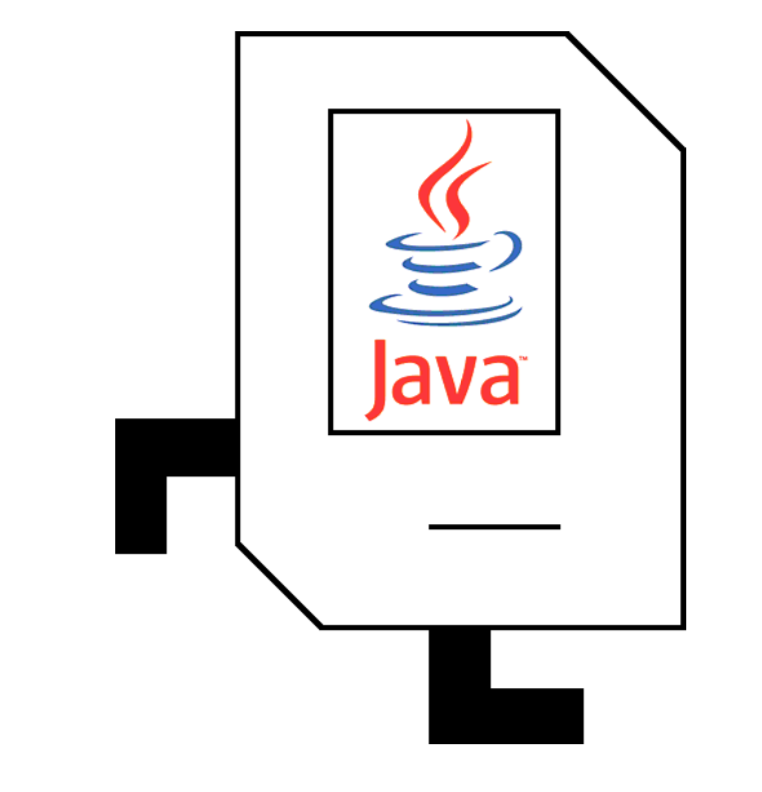

CS106A
קארל רידר
1 - פגוש את קארל
2 - תכנות
שיטות חדשות
4 - פירוק
5 - לולאות
6 - בעוד לולאות
7 - תנאים
8 - צמצום
9 - אלגוריתמים
10 - SuperKarel
קארל הרובוט

לומד Java
כריס פיץ 'ואריק רוברטס
המחלקה למדעי המחשב
אוניברסיטת סטנפורד
ינואר 2019
מסמך PDF מקורי
להתחיל